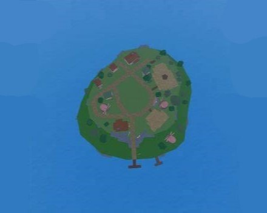
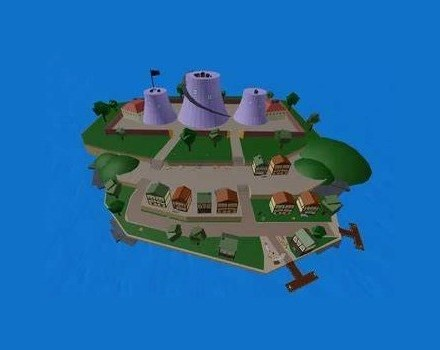

Ilhas do Blox-Fruits
Ilhas Iniciais
Ilha Inicial dos Piratas

Esta ilha é onde os jogadores novatos que escolhem os piratas começam.
Você pode ir á esta ilha se tiver no minímo nível 0 ou mais
Ilha Inicial da Marinha

Esta ilha é onde os jogadores novatos que escolhem os marinheiros começam.
Você pode ir á esta ilha se tiver no minímo nível 0 ou mais